zone-first v2 - large lots: the six pairwise-different plans per brief
Ranking is the provisional quality score, lower is better: each scored metric is measured against the band across the user's own plans; pieces per 100 m² is shown at score weight 0. A candidate is different from another when their layout families differ or their same-kind area overlap is below 0.7. The user's layouts never steer generation or ranking. Every zone carries its name and size (metres, 1 dp); Flex is hatched with its class, an extension is hatched the other way and labelled "Zone · extension", flex-walls are hatched with a dashed edge, the spine is dotted - nothing relies on colour.
L-01 - 14.0 x 25.0, 4 bed, double garage 14000 x 25000 mm, 4 bed, double garage
valid 4136/5824 generated · 3568 distinct · 1784 mirror images hidden
option 1 (rank 1 of 3568)score 10.7 · Flex share 22% · living 14% (49.0 m²) · circulation 7% · Core 17% · pieces 5.4/100 m² · bedroom spread 0.0 m · wet near bed yes · laundry near yes · spine 6.0 m · extensions 0.0 m² · flex m²: room 41.4 · living 49.0 · circulation 13.8 · storage 22.1 · sliver 0.0 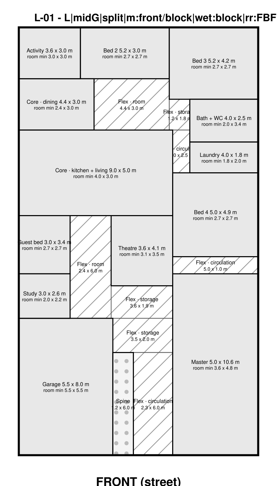
option 2 (rank 25 of 3568)score 11.32 · Flex share 25% · living 0% (0.0 m²) · circulation 10% · Core 17% · pieces 6.0/100 m² · bedroom spread 0.0 m · wet near bed yes · laundry near yes · spine 6.0 m · extensions 0.0 m² · flex m²: room 60.1 · living 0.0 · circulation 19.3 · storage 7.0 · sliver 0.0 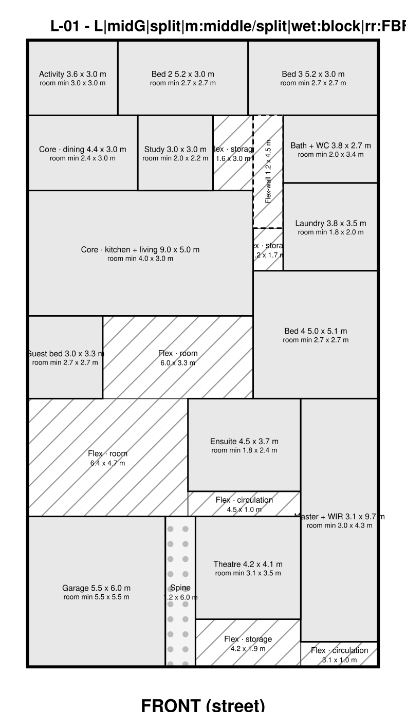
option 3 (rank 49 of 3568)score 12.4 · Flex share 26% · living 3% (12.2 m²) · circulation 10% · Core 17% · pieces 5.7/100 m² · bedroom spread 11.4 m · wet near bed yes · laundry near yes · spine 6.0 m · extensions 0.0 m² · flex m²: room 63.9 · living 12.2 · circulation 18.8 · storage 7.0 · sliver 0.0 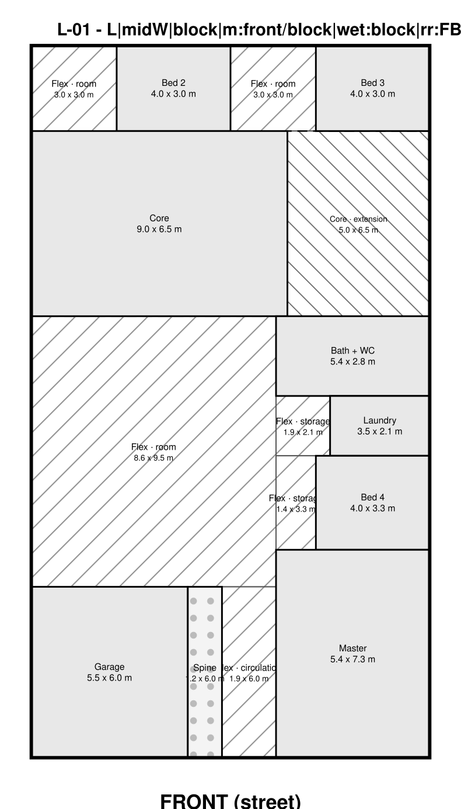
option 4 (rank 83 of 3568)score 13.67 · Flex share 22% · living 14% (48.6 m²) · circulation 6% · Core 17% · pieces 6.3/100 m² · bedroom spread 0.0 m · wet near bed yes · laundry near yes · spine 6.0 m · extensions 0.0 m² · flex m²: room 48.0 · living 48.6 · circulation 14.3 · storage 15.1 · sliver 0.0 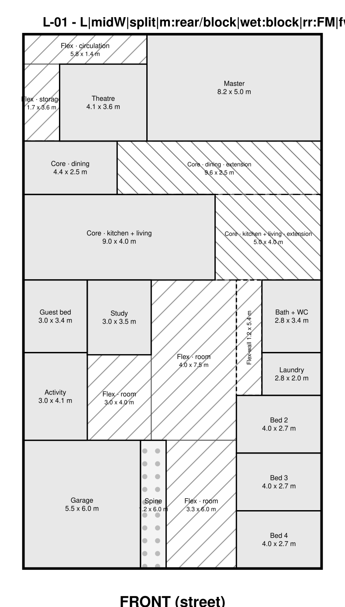
option 5 (rank 165 of 3568)score 14.24 · Flex share 28% · living 3% (12.2 m²) · circulation 6% · Core 16% · pieces 6.3/100 m² · bedroom spread 11.4 m · wet near bed yes · laundry near yes · spine 6.0 m · extensions 0.0 m² · flex m²: room 93.6 · living 12.2 · circulation 3.9 · storage 1.2 · sliver 0.0 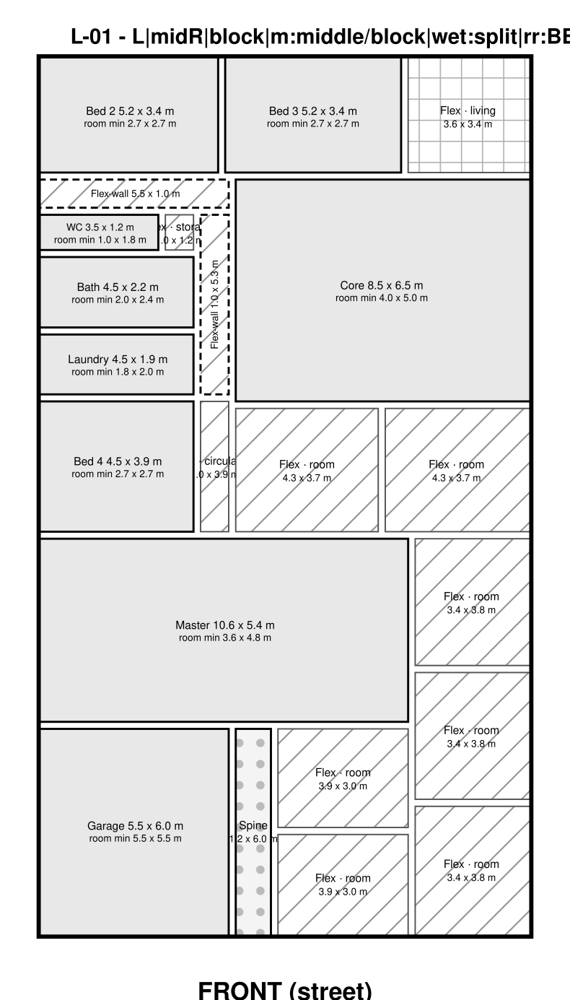
option 6 (rank 209 of 3568)score 14.83 · Flex share 23% · living 14% (48.6 m²) · circulation 10% · Core 17% · pieces 4.9/100 m² · bedroom spread 0.0 m · wet near bed yes · laundry near yes · spine 6.0 m · extensions 0.0 m² · flex m²: room 45.9 · living 48.6 · circulation 27.4 · storage 7.0 · sliver 0.0 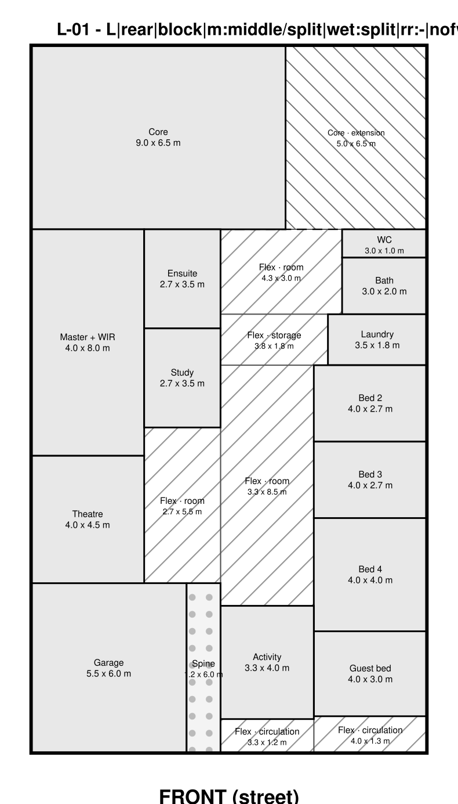
L-02 - 16.0 x 22.0 wide, 4 bed, double garage 16000 x 22000 mm, 4 bed, double garage
valid 2486/5824 generated · 1880 distinct · 940 mirror images hidden
option 1 (rank 1 of 1880)score 9.52 · Flex share 23% · living 0% (0.0 m²) · circulation 8% · Core 30% · pieces 5.7/100 m² · bedroom spread 0.0 m · wet near bed yes · laundry near yes · spine 6.0 m · extensions 45.5 m² · flex m²: room 56.5 · living 0.0 · circulation 15.5 · storage 8.4 · sliver 0.0 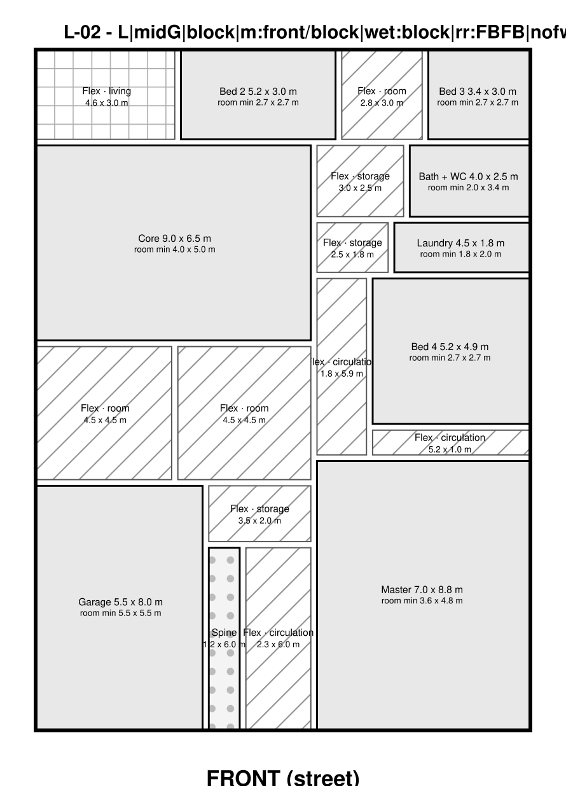
option 2 (rank 9 of 1880)score 18.48 · Flex share 27% · living 5% (19.0 m²) · circulation 3% · Core 17% · pieces 5.7/100 m² · bedroom spread 13.6 m · wet near bed yes · laundry near yes · spine 6.0 m · extensions 0.0 m² · flex m²: room 54.9 · living 19.0 · circulation 2.9 · storage 37.9 · sliver 0.0 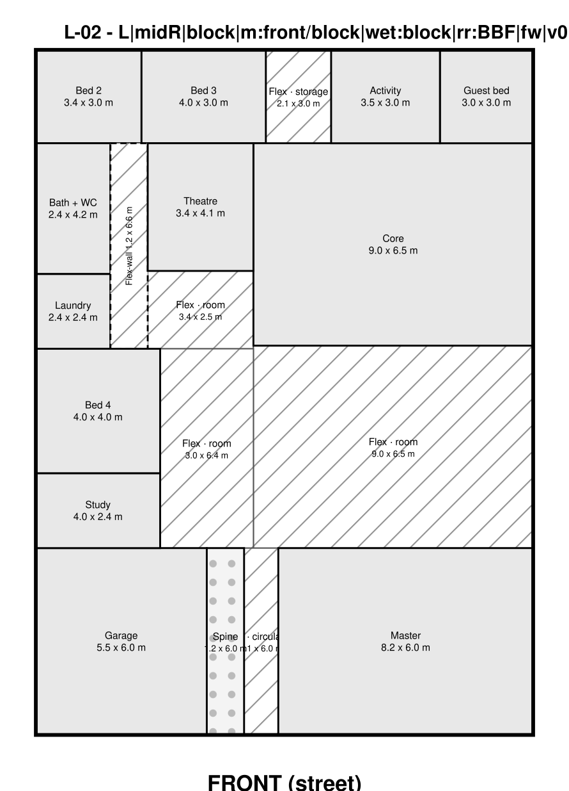
option 3 (rank 11 of 1880)score 18.81 · Flex share 31% · living 3% (9.5 m²) · circulation 8% · Core 17% · pieces 7.7/100 m² · bedroom spread 11.5 m · wet near bed yes · laundry near yes · spine 6.0 m · extensions 0.0 m² · flex m²: room 45.8 · living 9.5 · circulation 19.9 · storage 42.8 · sliver 0.0 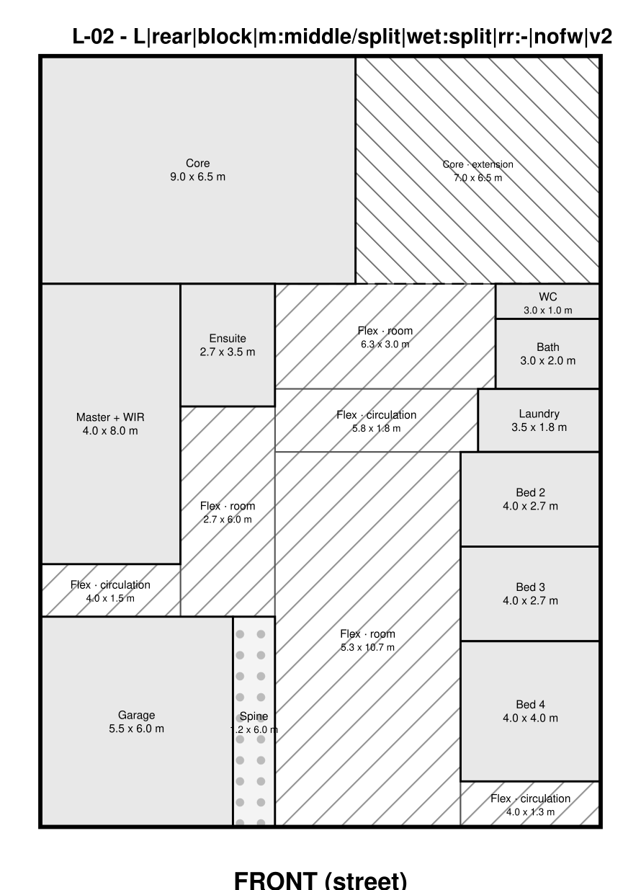
option 4 (rank 17 of 1880)score 19.51 · Flex share 32% · living 5% (17.4 m²) · circulation 8% · Core 17% · pieces 6.3/100 m² · bedroom spread 9.7 m · wet near bed yes · laundry near yes · spine 6.0 m · extensions 0.0 m² · flex m²: room 100.6 · living 17.4 · circulation 10.7 · storage 0.0 · sliver 0.0 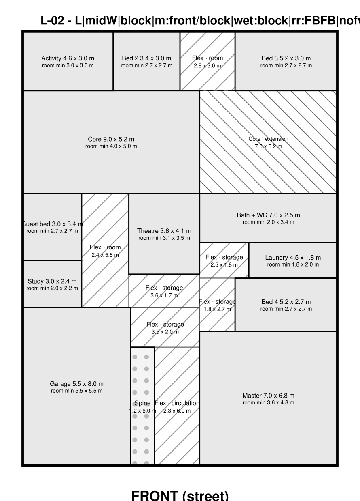
option 5 (rank 21 of 1880)score 20.6 · Flex share 34% · living 0% (0.0 m²) · circulation 7% · Core 21% · pieces 6.8/100 m² · bedroom spread 0.0 m · wet near bed yes · laundry near yes · spine 6.0 m · extensions 32.2 m² · flex m²: room 96.2 · living 0.0 · circulation 11.0 · storage 11.7 · sliver 0.0 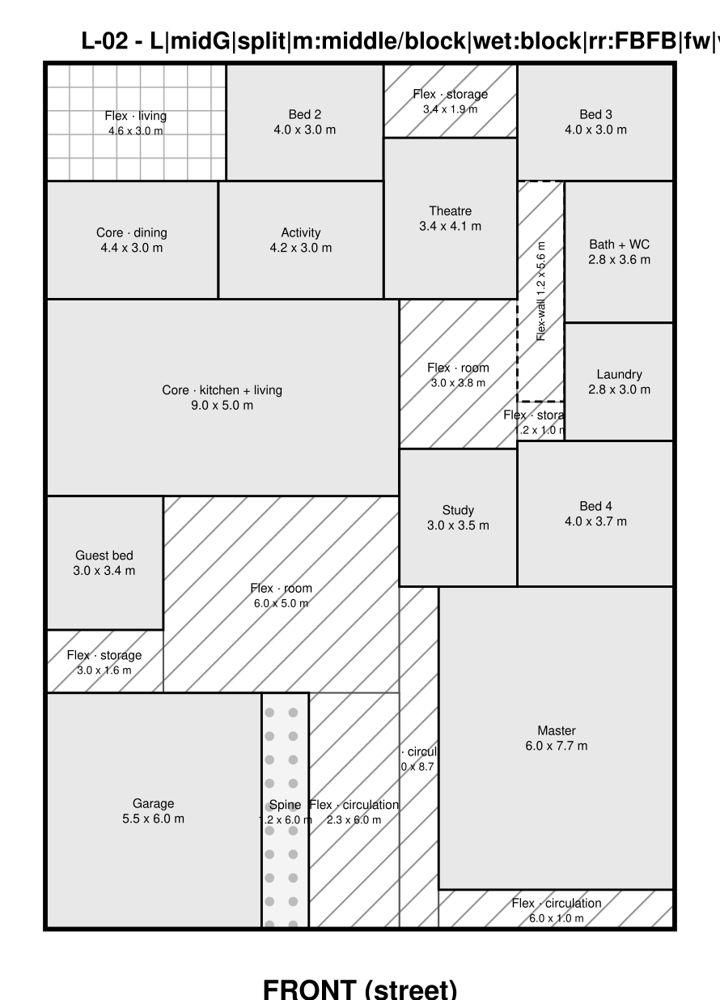
option 6 (rank 23 of 1880)score 21.77 · Flex share 22% · living 5% (19.0 m²) · circulation 2% · Core 26% · pieces 6.0/100 m² · bedroom spread 15.9 m · wet near bed yes · laundry near yes · spine 6.0 m · extensions 39.1 m² · flex m²: room 60.0 · living 19.0 · circulation 0.0 · storage 17.6 · sliver 0.0
L-03 - 12.5 x 30.0 narrow, 4 bed, double garage 12500 x 30000 mm, 4 bed, double garage
valid 3678/5824 generated · 3458 distinct · 1729 mirror images hidden
option 1 (rank 1 of 3458)score 14.52 · Flex share 28% · living 12% (45.9 m²) · circulation 8% · Core 16% · pieces 5.6/100 m² · bedroom spread 0.0 m · wet near bed yes · laundry near yes · spine 6.0 m · extensions 0.0 m² · flex m²: room 82.8 · living 45.9 · circulation 14.8 · storage 6.0 · sliver 0.0 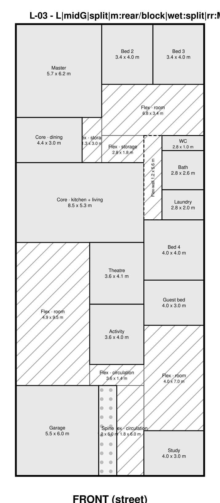
option 2 (rank 17 of 3458)score 15.86 · Flex share 29% · living 16% (59.9 m²) · circulation 8% · Core 16% · pieces 5.3/100 m² · bedroom spread 0.0 m · wet near bed yes · laundry near yes · spine 6.0 m · extensions 0.0 m² · flex m²: room 84.5 · living 59.9 · circulation 18.2 · storage 6.0 · sliver 0.0 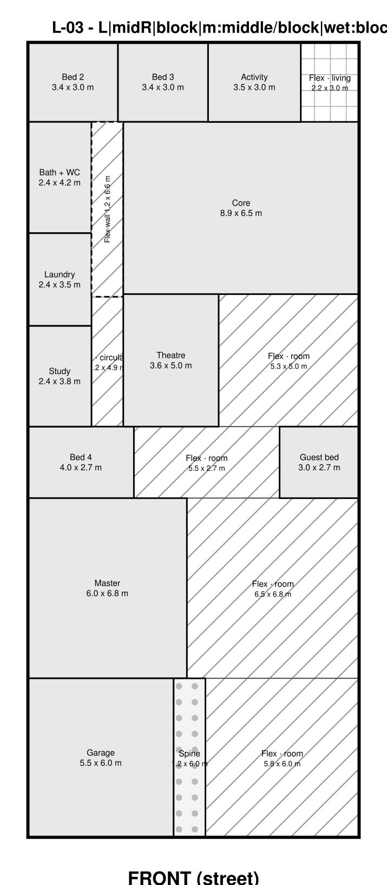
option 3 (rank 67 of 3458)score 18.11 · Flex share 23% · living 13% (50.2 m²) · circulation 5% · Core 22% · pieces 5.1/100 m² · bedroom spread 0.0 m · wet near bed no · laundry near yes · spine 6.0 m · extensions 22.8 m² · flex m²: room 51.1 · living 50.2 · circulation 12.3 · storage 22.0 · sliver 0.0 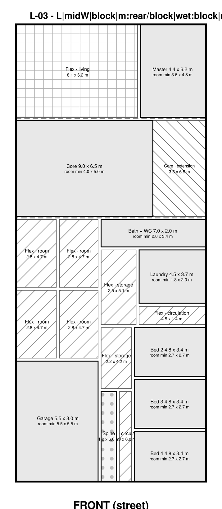
option 4 (rank 81 of 3458)score 18.44 · Flex share 33% · living 0% (0.0 m²) · circulation 5% · Core 22% · pieces 5.6/100 m² · bedroom spread 0.0 m · wet near bed yes · laundry near yes · spine 6.0 m · extensions 22.8 m² · flex m²: room 112.4 · living 0.0 · circulation 10.8 · storage 0.0 · sliver 0.0 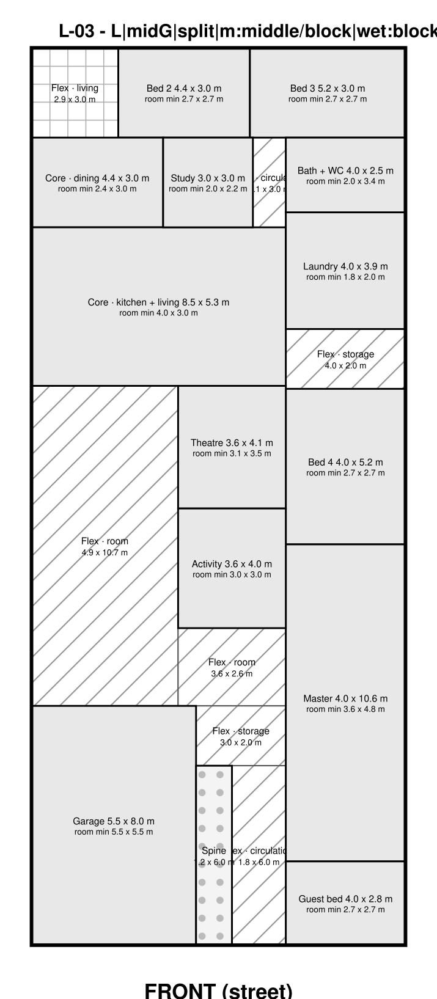
option 5 (rank 153 of 3458)score 20.7 · Flex share 35% · living 0% (0.0 m²) · circulation 6% · Core 22% · pieces 6.1/100 m² · bedroom spread 0.0 m · wet near bed yes · laundry near yes · spine 6.0 m · extensions 22.8 m² · flex m²: room 108.5 · living 0.0 · circulation 16.4 · storage 6.8 · sliver 0.0
option 6 (rank 155 of 3458)score 20.99 · Flex share 30% · living 2% (7.1 m²) · circulation 5% · Core 22% · pieces 5.3/100 m² · bedroom spread 16.5 m · wet near bed yes · laundry near yes · spine 6.0 m · extensions 22.8 m² · flex m²: room 102.5 · living 7.1 · circulation 10.8 · storage 0.0 · sliver 0.0 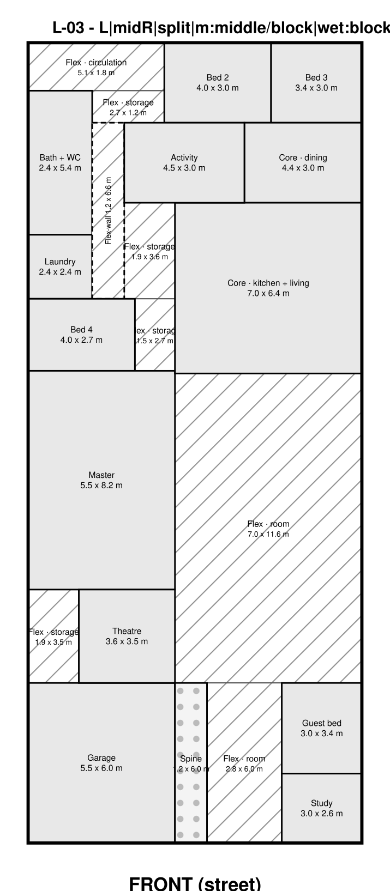
L-04 - 15.0 x 24.0, 5 bed, double garage 15000 x 24000 mm, 5 bed, double garage
valid 3600/5504 generated · 2702 distinct · 1351 mirror images hidden
option 1 (rank 1 of 2702)score 8.88 · Flex share 24% · living 0% (0.0 m²) · circulation 4% · Core 23% · pieces 6.4/100 m² · bedroom spread 0.0 m · wet near bed yes · laundry near yes · spine 6.0 m · extensions 33.6 m² · flex m²: room 63.5 · living 0.0 · circulation 3.2 · storage 19.0 · sliver 0.0 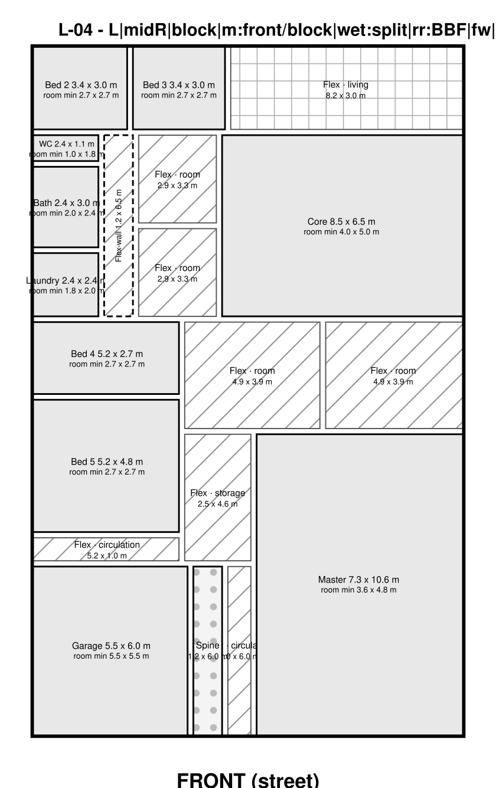
option 2 (rank 9 of 2702)score 18.59 · Flex share 22% · living 4% (15.6 m²) · circulation 11% · Core 15% · pieces 6.1/100 m² · bedroom spread 15.5 m · wet near bed yes · laundry near yes · spine 6.0 m · extensions 0.0 m² · flex m²: room 46.1 · living 15.6 · circulation 34.1 · storage 0.0 · sliver 0.0 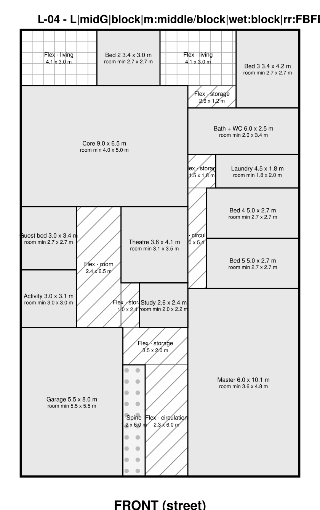
option 3 (rank 13 of 2702)score 21.72 · Flex share 29% · living 4% (15.6 m²) · circulation 7% · Core 16% · pieces 6.9/100 m² · bedroom spread 14.6 m · wet near bed yes · laundry near yes · spine 6.0 m · extensions 0.0 m² · flex m²: room 59.8 · living 15.6 · circulation 18.4 · storage 25.9 · sliver 0.0 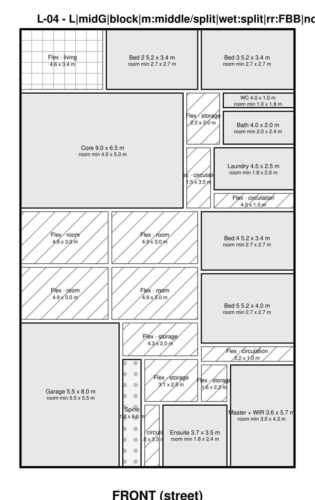
option 4 (rank 17 of 2702)score 22.85 · Flex share 36% · living 0% (0.0 m²) · circulation 4% · Core 18% · pieces 7.2/100 m² · bedroom spread 0.0 m · wet near bed yes · laundry near yes · spine 6.0 m · extensions 25.2 m² · flex m²: room 114.4 · living 0.0 · circulation 3.2 · storage 13.4 · sliver 0.0 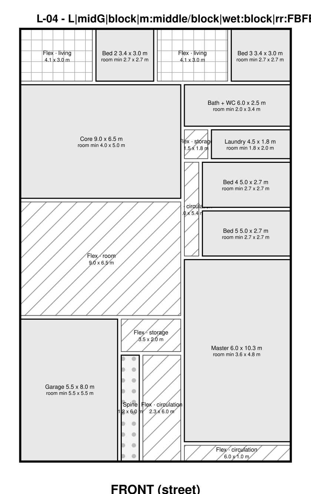
option 5 (rank 19 of 2702)score 23.33 · Flex share 28% · living 11% (40.0 m²) · circulation 4% · Core 17% · pieces 7.2/100 m² · bedroom spread 0.0 m · wet near bed yes · laundry near yes · spine 6.0 m · extensions 24.0 m² · flex m²: room 85.4 · living 40.0 · circulation 3.2 · storage 13.4 · sliver 0.0 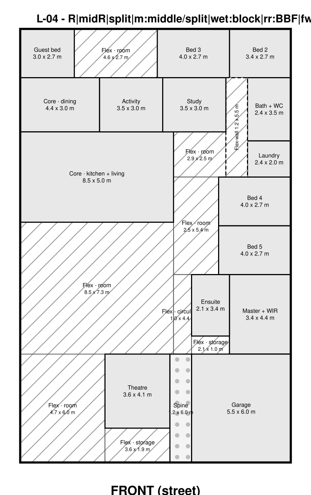
option 6 (rank 27 of 2702)score 28.66 · Flex share 41% · living 4% (12.9 m²) · circulation 6% · Core 15% · pieces 6.7/100 m² · bedroom spread 11.6 m · wet near bed yes · laundry near yes · spine 6.0 m · extensions 0.0 m² · flex m²: room 123.8 · living 12.9 · circulation 14.5 · storage 7.6 · sliver 0.0 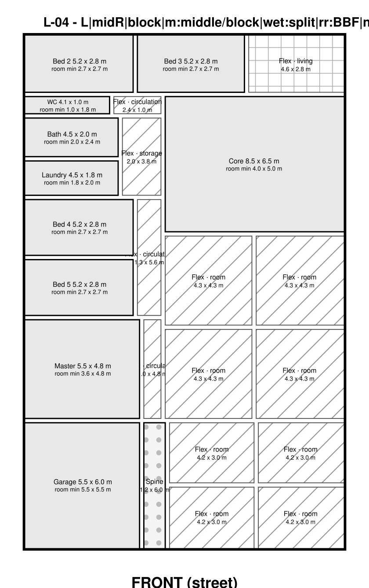
L-05 - 17.0 x 25.0, 5 bed, double garage 17000 x 25000 mm, 5 bed, double garage
valid 3636/5504 generated · 2738 distinct · 1369 mirror images hidden
option 1 (rank 1 of 2738)score 15.5 · Flex share 29% · living 0% (0.0 m²) · circulation 9% · Core 26% · pieces 5.4/100 m² · bedroom spread 0.0 m · wet near bed yes · laundry near yes · spine 6.0 m · extensions 52.0 m² · flex m²: room 91.0 · living 0.0 · circulation 24.4 · storage 8.4 · sliver 0.0 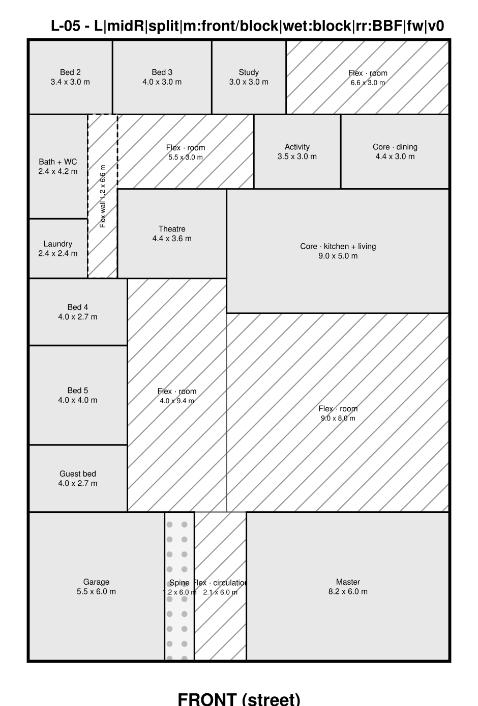
option 2 (rank 3 of 2738)score 18.08 · Flex share 30% · living 5% (22.4 m²) · circulation 7% · Core 14% · pieces 6.1/100 m² · bedroom spread 13.5 m · wet near bed yes · laundry near yes · spine 6.0 m · extensions 0.0 m² · flex m²: room 100.8 · living 22.4 · circulation 12.2 · storage 14.9 · sliver 0.0 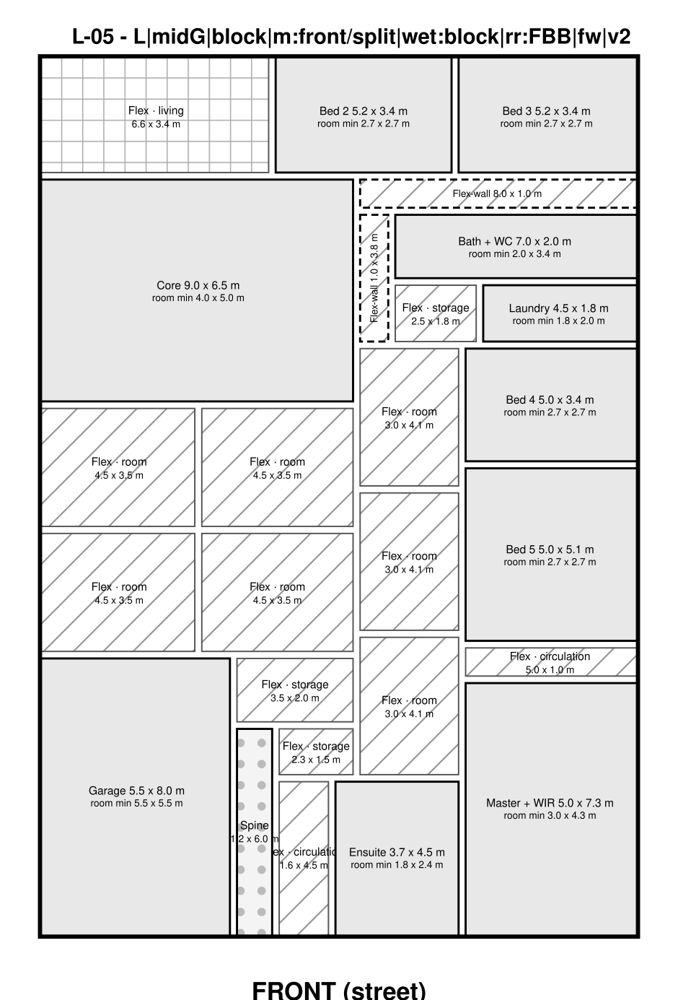
option 3 (rank 13 of 2738)score 21.19 · Flex share 34% · living 0% (0.0 m²) · circulation 8% · Core 14% · pieces 6.1/100 m² · bedroom spread 0.0 m · wet near bed yes · laundry near yes · spine 6.0 m · extensions 0.0 m² · flex m²: room 117.6 · living 0.0 · circulation 13.8 · storage 11.5 · sliver 0.0 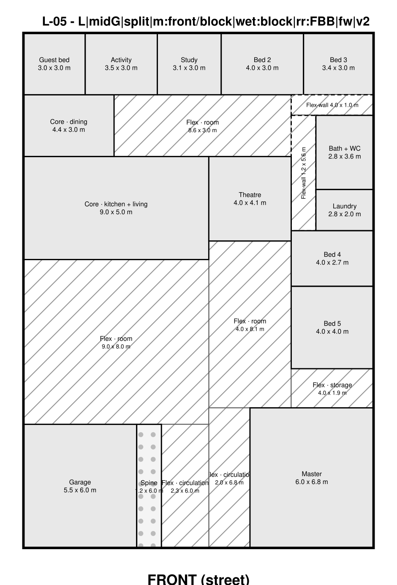
option 4 (rank 17 of 2738)score 21.29 · Flex share 33% · living 5% (22.4 m²) · circulation 3% · Core 14% · pieces 4.9/100 m² · bedroom spread 13.4 m · wet near bed yes · laundry near yes · spine 6.0 m · extensions 0.0 m² · flex m²: room 125.4 · living 22.4 · circulation 3.9 · storage 13.0 · sliver 0.0 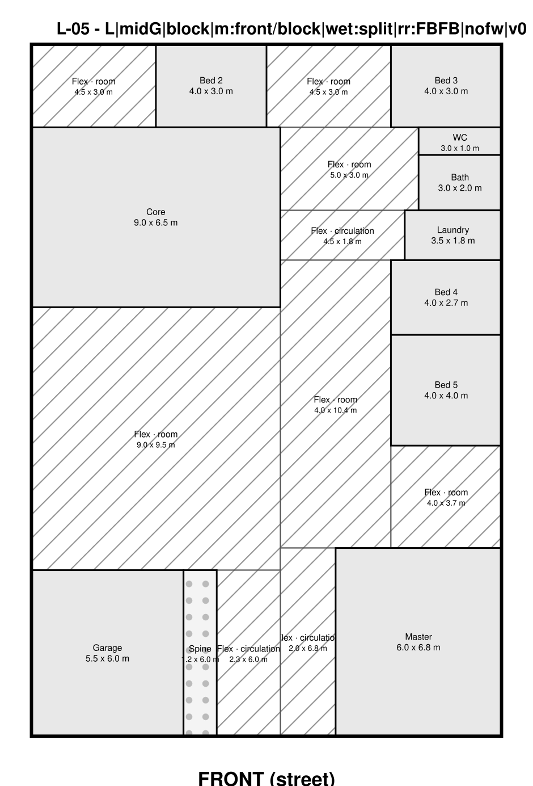
option 5 (rank 77 of 2738)score 27.24 · Flex share 40% · living 0% (0.0 m²) · circulation 8% · Core 18% · pieces 6.6/100 m² · bedroom spread 0.0 m · wet near bed yes · laundry near yes · spine 6.0 m · extensions 36.8 m² · flex m²: room 139.7 · living 0.0 · circulation 23.8 · storage 5.5 · sliver 0.0 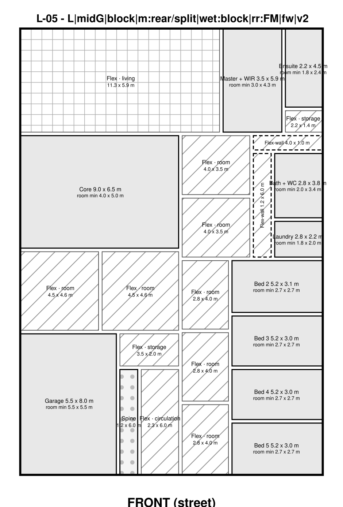
option 6 (rank 87 of 2738)score 28.14 · Flex share 26% · living 16% (66.7 m²) · circulation 8% · Core 14% · pieces 5.4/100 m² · bedroom spread 0.0 m · wet near bed yes · laundry near yes · spine 6.0 m · extensions 0.0 m² · flex m²: room 80.9 · living 66.7 · circulation 13.8 · storage 14.8 · sliver 0.0 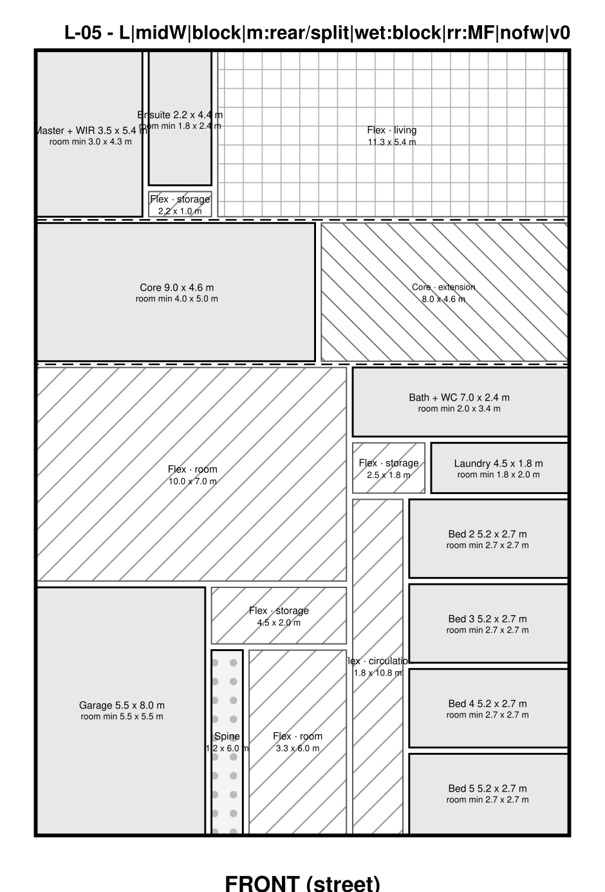